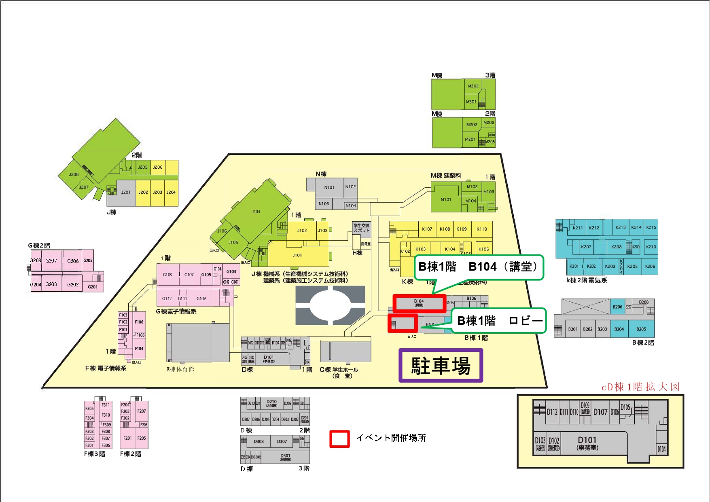

| イベント名 | 開催場所 | 受付時間 | 開始時間 |
| 能開スタンプラリー | 校内立ち入り 可能場所 |
随時参加 | 10：00～ |
| アームレスリング大会 | B104室 （講堂） |
～10：30 | 10：00～ |
| うまい棒ソムリエ選手権 | B104室 （講堂） |
～13：30 | 13：00～ |
| 勝ち残り！！ 究極の2択クイズ |
B104室 （講堂） |
自由参加 | 15：00～ |
| イベント名 | 開催場所 | 受付時間 | 開始時間 |
| 限界先生クイズ ～その情報、 出していいの！？～ |
B104室 （講堂） |
自由参加 | 10：00～ |
| 目指せ！ ワールドレコード！ マリオRTA |
B棟1階 | ～13：00 | 10：00～ |
| 毎年恒例！ じゃんけん大会 |
B104室 （講堂） |
自由参加 | 12：00～ |
| コスプレコンテスト | B104室 （講堂） |
～11：00 | 随時Google フォームで投票 |
| 軽音サークルライブ | B104室 （講堂） |
観覧自由 | 14：00～ |
| うちわ抽選 | B104室 （講堂） |
事前配布 | 15：00～ |
※実行委員1名に勝利したらお菓子がもらえるイベントも行います。小学生向けですが、本校の学生も参加可能です。
※トーナメントは本校の学生のみ参加可能です
※うちわの持参をお願いいたします
※各クラスの人数から正答率を出しますので、クラス内で相談して回答しても構いません
※表彰は表彰式で行います。表彰された際のためにクラス代表者を決めておいてください
※景品は1人1つまでです
※欲しい景品を狙うために棄権することも可能です
※景品の譲渡は自由ですが、転売はおやめ下さい
※更衣室はD307を使用してください。貴重品管理に十分注意してください。
※順番待ちをしている人がいたら、1人で何度も挑戦するのはやめてください
※当選した人がその場にいなかった場合、引き直しとなります
※複数うちわを所持していた場合、同じ人が当選しても後から当選した番号は無効となります。当選による景品は1人1つまでとなります
表彰対象者が辞退・棄権・欠席などで不在の場合、次点の方へ繰り下げて表彰・賞品の授与を行います。事前に表彰式に参加できない旨を実行委員会に申し出た方は、後日対応といたします。 公平性と運営の都合上、ご理解とご協力をお願いいたします。